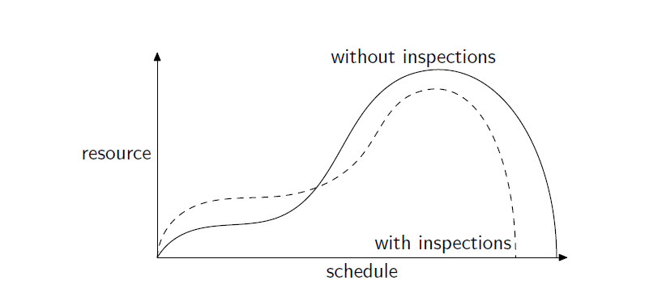

Professional Software Development
Video Lecture 3
Video Lecture 5
Video Lecture 6
Video Lecture 7
Video Lecture 8
Video Lecture 9
Video Lecture 10
Video Lecture 12
Video Lecture 13
Video Lecture 14
Video Lecture 15
Video Lecture 16
Video Lecture 19
Video Lecture 22
Video Lecture 23
Video Lecture 26
Software Inspection Techniques
- What are Inspections?
-
Managing an Inspection
- What can be the subject of an inspection?
- application source code packages, classes or methods
- source code documentation
- test harnesses
- design descriptions, such as UML component or class diagrams
- requirements speci cations, such as user stories
- Why take inspections?
- Deteck defects in software
- identify opportunities for refactoring
- as part of white/glass box testing process, or QA activities
- develop a shared understanding of the purpose and function of a system
- share good practice between team
- Dont use inspections for
-
Identifying poor performance
-
inspections should be used to identify improvement
- total defects = target method + other methods + + undetected
-
defect detection rate = (target method) / (total defects)
- How effective is it?
- Fagan [1976] reported a DDR of 66% and 82% for two IBM case studies employing a comprehensive inspection process
- Jones [1986] reported a DDR of 60% for design inspections alone, compared to a DDR of just 25% for unit testing
- Boehm [1981] surveyed four case studies reported between1978 and 1980, finding that inspections discovered between 63% and 75% of defects
- Wilkerson et al. [2012] found that inspections led to fewer defects left in a system than a test driven development approach to implementation
- Runeson et al. [2006] reported a more complex picture from a survey of 12 case studies
- Cost of inspections?
- Fagan [1986] reported several anecdotal case studies where development and/or maintenance costs were signi cantly reduced as a net result of applying inspections. One project experienced a 95% reduction in maintenance costs
- Boehm [1981]’s survey of case studies reported that code inspections could produce between 10 and 120 delivered lines of source code per person hour, compared with 5-24 lines for unit testing
- Wilkerson et al. [2012] found that applying software inspections cost about three times a much in total time compared with test driven development

- When to conduct an inspection?
- Periodically as part of a clean-up or refactoring exercise
- After a period of requirements gathering and speci cation
- During staging of a new feature implementation
- As a feature is implemented (pair programming)
- Roles in inspection
- Mod: responsible for coordinating the arrangements for the inspection
- Author(s): >=1 team members who make >=1 software atifacts for inspection
- Inspector(s): responsibel for identifying defects in artifact during inspection

- Choosing what to review
- if artifact’s been changed, must be inspected before change can be committed to prod
- if artifact is associated with high priority feature
- if artifact has been associated with large no of defect reports
- if artifact has been subject to a large number of recent changes
- Static analysis tools
- Design metrics, used to identify parts of system that are poorly structured
- Source code metrics
- No. of lines of code per funct/module
- Ratio btwn executable and comment lines of code
- No. of spelling mistakes
- Soft process metrics
- No. of changes per commit for module or over a period
- No of defects discovered over a period for a module
- Rules for conducting an inspection
- Focus on identifying imporovement opportunities, not recrimination
- purposde of inspections is to uncover defects, not recommend remedial actions
- allow inspectors to take breaks. too much concentration leads to defects being missed
- desseminate and act on recommended actions quickly
- monitor remedial action to make sure it addresses the identified problems
- Strats for identifying defects
- adhoc
- checklist directed
- senarios
Linus’ Law
Given enough eyeballs, all bugs are shallow
Key Point
Inspections are an essential quality assurance tool